Cities
Explore amazing destinations around the world
Search city names, countries, landmarks, food, or souvenirs
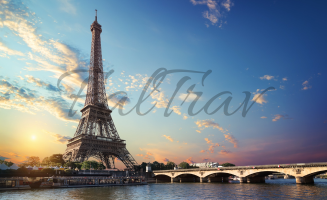
Paris, France
The City of Light offers iconic landmarks like the Eiffel Tower and Louvre Museum, world-class cuisine, and charming streets.
Must-See Places:
- Eiffel Tower
- Louvre Museum
- Notre-Dame Cathedral
Local Food:
- Croissants
- Coq au Vin
- Macarons
Souvenirs:
- Eiffel Tower Miniature
- French Perfume
- Macaron Gift Box
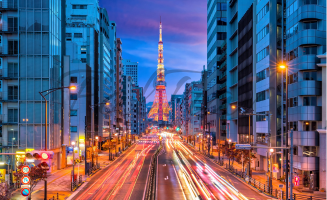
Tokyo, Japan
A vibrant metropolis blending traditional culture with cutting-edge technology, offering unique experiences from temples to neon-lit streets.
Must-See Places:
- Senso-ji Temple
- Shibuya Crossing
- Tokyo Skytree
Local Food:
- Sushi
- Ramen
- Matcha
Souvenirs:
- Japanese Tea Set
- Kokeshi Dolls
- Furoshiki (Wrapping Cloth)
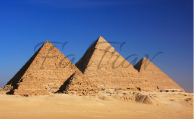
Cairo, Egypt
Home to the ancient Pyramids of Giza and the Sphinx, offering a journey through millennia of history and culture.
Must-See Places:
- Pyramids of Giza
- Egyptian Museum
- Khan el-Khalili Bazaar
Local Food:
- Koshari
- Ful Medames
- Baklava
Souvenirs:
- Papyrus Art
- Alabaster Scarabs
- Turquoise Jewelry
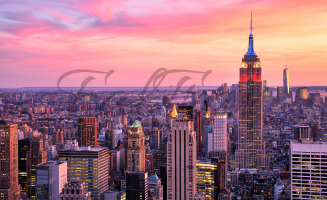
New York, USA
The Big Apple is a melting pot of cultures with iconic landmarks, Broadway shows, and diverse culinary scenes.
Must-See Places:
- Statue of Liberty
- Central Park
- Times Square
Local Food:
- New York Pizza
- Bagels with Lox
- Cheesecake
Souvenirs:
- I ❤ NY T-shirt
- Broadway Playbill
- NYC Skyline Model
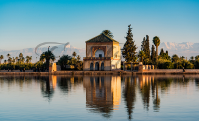
Marrakech, Morocco
The Red City is a vibrant blend of traditional markets, stunning architecture, and rich cultural heritage nestled at the foot of the Atlas Mountains.
Must-See Places:
- Jemaa el-Fnaa Square
- Koutoubia Mosque
- Majorelle Garden
Local Food:
- Tagine
- Couscous
- Moroccan Mint Tea
Souvenirs:
- Argan Oil
- Berber Jewelry
- Traditional Pottery
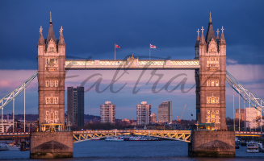
London, United Kingdom
The capital of England offers iconic landmarks, world-class museums, royal heritage, and a vibrant cultural scene.
Must-See Places:
- Big Ben and Houses of Parliament
- Buckingham Palace
- Tower of London
Local Food:
- Fish and Chips
- Afternoon Tea
- Shepherd's Pie
Souvenirs:
- Union Jack Souvenirs
- Tea and Biscuits
- London Bus Miniature
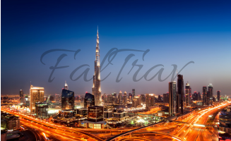
Dubai, UAE
A modern metropolis featuring iconic skyscrapers, luxury shopping, and desert adventures.
Must-See Places:
- Burj Khalifa
- Palm Jumeirah
- Dubai Mall
Local Food:
- Shawarma
- Machboos
- Luqaimat
Souvenirs:
- Gold and Jewelry
- Spices
- Dubai-themed Keychains
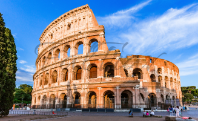
Rome, Italy
The Eternal City is rich in history with ancient ruins, world-class art, and exceptional cuisine.
Must-See Places:
- Colosseum
- Vatican City
- Roman Forum
Local Food:
- Carbonara
- Supplì
- Cannoli
Souvenirs:
- Italian Leather Goods
- Prosecco
- Mini Colosseum Statue
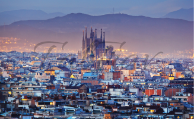
Barcelona, Spain
A vibrant city with stunning architecture, beautiful beaches, and a lively nightlife scene.
Must-See Places:
- Sagrada Família
- Las Ramblas
- Park Güell
Local Food:
- Paella
- Tapas
- Churros
Souvenirs:
- Flamenco Accessories
- Spanish Saffron
- Gaudí-inspired Art
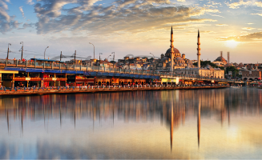
Istanbul, Turkey
A vibrant metropolis bridging Europe and Asia with historic mosques, bazaars, and delicious cuisine.
Must-See Places:
- Hagia Sophia
- Blue Mosque
- Grand Bazaar
Local Food:
- Doner Kebab
- Baklava
- Turkish Delight
Souvenirs:
- Evil Eye Charms
- Turkish Carpets
- Sets of Turkish Coffee
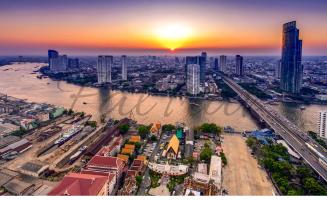
Bangkok, Thailand
An energetic city offering ornate temples, vibrant street life, and world-renowned cuisine.
Must-See Places:
- Grand Palace
- Wat Pho Temple
- Chatuchak Weekend Market
Local Food:
- Pad Thai
- Tom Yum Goong
- Mango Sticky Rice
Souvenirs:
- Thai Silk
- Buddha Statues
- Spiced Thai Tea
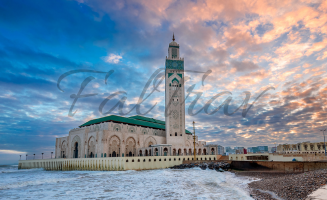
Casablanca, Morocco
One of Morocco's largest cities and its economic capital, blending French colonial architecture with traditional Moroccan culture.
Must-See Places:
- Hassan II Mosque
- Old Medina
- Ain Diab Beach
Local Food:
- Harira Soup
- Mechoui Lamb
- Mint Tea
Souvenirs:
- Ceramic Pottery
- Argan Oil
- Traditional Carpets
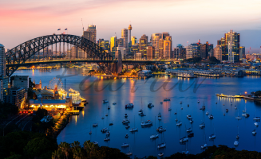
Sydney, Australia
A stunning coastal city known for its iconic Opera House, beautiful beaches, and vibrant culture.
Must-See Places:
- Sydney Opera House
- Sydney Harbour Bridge
- Bondi Beach
Local Food:
- Vegemite
- Pavlova
- Meat Pie
Souvenirs:
- Aboriginal Art
- Koala Plushies
- Boomerang

Rio de Janeiro, Brazil
A breathtaking city famous for its Carnival, stunning beaches, and dramatic landscape.
Must-See Places:
- Christ the Redeemer
- Sugar Loaf Mountain
- Ipanema Beach
Local Food:
- Coxinha
- Feijoada
- Açaí Bowl
Souvenirs:
- Carnival Masks
- Havaianas Flip-flops
- Brazil Nut Statues

Cape Town, South Africa
A beautiful coastal city offering dramatic mountains, wine regions, and rich cultural heritage.
Must-See Places:
- Table Mountain
- Cape of Good Hope
- Robben Island
Local Food:
- Bobotie
- Braai
- Malamatoo
Souvenirs:
- Shweshwe Textiles
- Wine from Stellenbosch
- African Masks
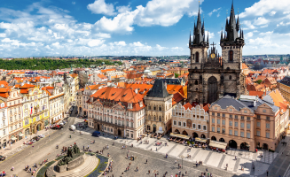
Prague, Czech Republic
A fairy-tale city with stunning architecture, historic castles, and world-famous beer culture.
Must-See Places:
- Prague Castle
- Charles Bridge
- Old Town Square
Local Food:
- Pierogi
- Goulash
- Trdelník
Souvenirs:
- Crystal Glassware
- Beer Steins
- Marionette Puppets

Buenos Aires, Argentina
The Paris of South America, known for tango, European architecture, and vibrant neighborhoods.
Must-See Places:
- La Boca
- Recoleta Cemetery
- Teatro Colón
Local Food:
- Asado
- Empanadas
- Choripán
Souvenirs:
- Tango Vinyl Records
- Mate Sets
- Argentine Wine
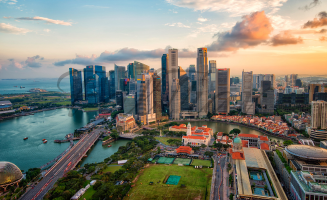
Singapore, Singapore
A modern cosmopolitan city-state known for gardens, food culture, and architectural marvels.
Must-See Places:
- Gardens by the Bay
- Marina Bay Sands
- Chinatown
Local Food:
- Hainanese Chicken Rice
- Chili Crab
- Laksa
Souvenirs:
- Lantern Decorations
- Spices
- Orchid-themed Items
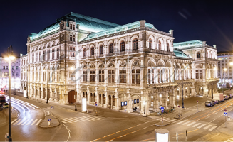
Vienna, Austria
A cultural capital renowned for music, imperial history, coffeehouse culture, and fine arts.
Must-See Places:
- Schoenbrunn Palace
- Vienna State Opera
- Belvedere Palace
Local Food:
- Wiener Schnitzel
- Sacher Torte
- Apfelstrudel
Souvenirs:
- Mozart Kugeln
- Crystal Decorations
- Coffee and Sacher Torte

Seoul, South Korea
A dynamic metropolis blending ancient palaces and temples with modern K-pop culture and tech.
Must-See Places:
- Gyeongbokgung Palace
- Bukchon Hanok Village
- N Seoul Tower
Local Food:
- Bulgogi
- Bibimbap
- Korean BBQ
Souvenirs:
- Korean Ginseng
- K-Pop Merchandise
- Traditional Hanbok
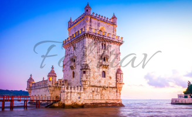
Lisbon, Portugal
A charming coastal city known for its colorful tiles, historic trams, and Fado music.
Must-See Places:
- Belém Tower
- Tram 28
- Jerónimos Monastery
Local Food:
- Pastéis de Nata
- Bacalhau
- Francesinha
Souvenirs:
- Azulejo Tiles
- Port Wine
- Portuguese Cork Products
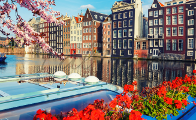
Amsterdam, Netherlands
A scenic city famous for its canals, historic architecture, and vibrant cycling culture.
Must-See Places:
- Canal Ring
- Rijksmuseum
- Vondelpark
Local Food:
- Stroopwafel
- Herring
- Poffertjes
Souvenirs:
- Clogs (Wooden Shoes)
- Delft Blue Pottery
- Cheese from Dutch Markets
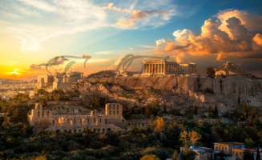
Athens, Greece
The birthplace of democracy and Western civilization, featuring ancient ruins and vibrant culture.
Must-See Places:
- Acropolis and Parthenon
- Plaka Neighborhood
- Temple of Olympian Zeus
Local Food:
- Gyro
- Moussaka
- Greek Salad
Souvenirs:
- Olive Oil and Soap
- Backgammon Sets
- Blue and White Ceramics
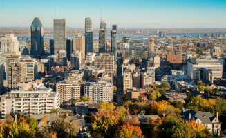
Montreal, Canada
A bilingual city with European charm, historic architecture, and renowned festivals.
Must-See Places:
- Old Montreal
- Montreal Botanical Garden
- Mount Royal Park
Local Food:
- Poutine
- Montreal Smoked Meat
- Maple Taffy
Souvenirs:
- Maple Syrup Products
- Montreal Canadiens Merch
- Ice Wine
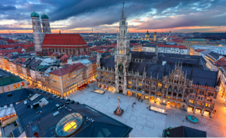
Munich, Germany
A beautiful Bavarian city known for its beer gardens, historic architecture, and festivals.
Must-See Places:
- Marienplatz
- Nationaltheater Munich
- English Garden
Local Food:
- Bratwurst
- Pretzel
- Sauerbraten
Souvenirs:
- Beer Steins
- Lederhosen Dirndls
- Oktoberfest Memorabilia
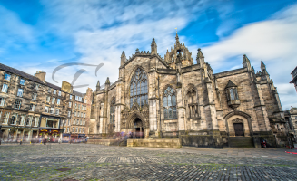
Edinburgh, Scotland
The capital of Scotland, known for its historic architecture and annual arts festival.
Must-See Places:
- Edinburgh Castle
- Royal Mile
- Arthur's Seat
Local Food:
- Haggis
- Scotch Whisky
- Shortbread
Souvenirs:
- Tartan Products
- Scotch Whisky
- Kilts and Accessories
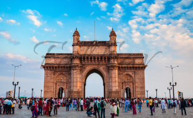
Mumbai, India
India's financial capital, a vibrant metropolis blending colonial architecture with Bollywood culture.
Must-See Places:
- Gateway of India
- Marine Drive
- Chhatrapati Shivaji Terminus
Local Food:
- Vada Pav
- Biryani
- Pani Puri
Souvenirs:
- Spices and Curry Powders
- Silk Sarees
- Bollywood Film Memorabilia
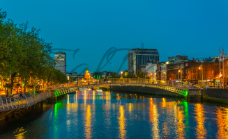
Dublin, Ireland
The charming capital of Ireland, known for its literary history, friendly pubs, and rich cultural scene.
Must-See Places:
- Guinness Storehouse
- Trinity College Library
- Temple Bar
Local Food:
- Irish Stew
- Soda Bread
- Boxty
Souvenirs:
- Irish Whiskey
- Celtic Jewelry
- Claddagh Rings
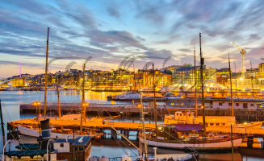
Oslo, Norway
The gateway to the fjords, offering incredible architecture, museums, and outdoor adventures.
Must-See Places:
- Viking Ship Museum
- Oslo Opera House
- Akershus Fortress
Local Food:
- Rakfisk
- Fårikål
- Klippfisk
Souvenirs:
- Rosendals Rose Pattern
- Lefse Maker
- Norwegian Wool Sweaters
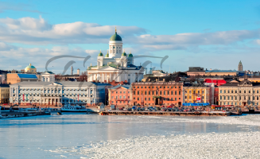
Helsinki, Finland
A vibrant Nordic city combining modern design with classical architecture along the Baltic Sea.
Must-See Places:
- Temppeliaukio Church
- Finnish National Opera
- Suomenlinna Fortress
Local Food:
- Salmon
- Karjalanpiirakka
- Lohikeitto
Souvenirs:
- Marimekko Products
- Iittala Glassware
- Salmiakki (Salty Licorice)
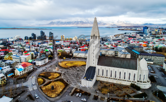
Reykjavik, Iceland
The world's northernmost capital, serving as a gateway to incredible natural phenomena.
Must-See Places:
- Blue Lagoon
- Golden Circle
- Harpa Concert Hall
Local Food:
- Lamb
- Plokkfiskur
- Skyr
Souvenirs:
- Lopapeysa Sweaters
- Icelandic Wool Products
- Volcanic Glassware
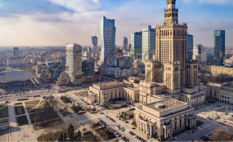
Warsaw, Poland
A resilient city that has rebuilt itself, showcasing reconstructed old town and vibrant culture.
Must-See Places:
- Old Town
- Lazienki Park
- Palace of Culture and Science
Local Food:
- Pierogi
- Bigos
- Sernik
Souvenirs:
- Amber Jewelry
- Wodka
- Traditional Polish Pottery
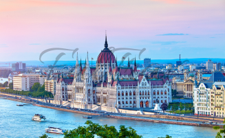
Budapest, Hungary
The "Paris of the East" with stunning architecture, thermal baths, and rich history.
Must-See Places:
- Parliament Building
- Buda Castle
- Széchenyi Thermal Bath
Local Food:
- Goulash
- Lángos
- Túró Rudi
Souvenirs:
- Herend Porcelain
- Tokaji Wine
- Paprika Products
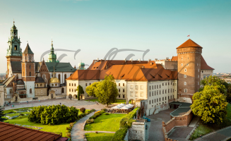
Krakow, Poland
A historic city with one of Europe's most beautiful medieval town squares and rich cultural heritage.
Must-See Places:
- Main Market Square
- Wawel Castle
- Wieliczka Salt Mine
Local Food:
- Oscypek
- Żurek
- Sękacz
Souvenirs:
- Wycinanki Paper Cutouts
- Bolesławiec Ceramics
- Amber Jewelry
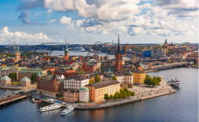
Stockholm, Sweden
A beautiful city spread across 14 islands, known for its well-preserved old town and modern design.
Must-See Places:
- Old Town (Gamla Stan)
- Royal Palace
- Vasa Museum
Local Food:
- Meatballs
- Gravlax
- Kanelbullar
Souvenirs:
- Swedish Glass (Orrefors)
- Dala Horses
- Swedish Fish (Candy)
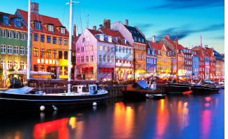
Copenhagen, Denmark
The fairy-tale capital of Denmark, home to the Little Mermaid, castles, and innovative cuisine.
Must-See Places:
- Tivoli Gardens
- Rosenborg Castle
- Nyhavn Harbor
Local Food:
- Smørrebrød
- Flæskeknus
- Æbleskiver
Souvenirs:
- LEGO Products
- Royal Copenhagen Porcelain
- Danish Pastries
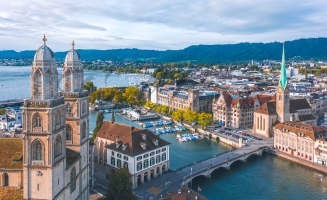
Zurich, Switzerland
A major financial center set on the Limmat River, with beautiful lakes, museums, and alpine access.
Must-See Places:
- Old Town (Altstadt)
- Lake Zurich
- Kunsthaus Zurich
Local Food:
- Rösti
- Birchermüesli
- Zürcher Geschnetzeltes
Souvenirs:
- Swiss Chocolate
- Swiss Army Knives
- Cuckoo Clocks
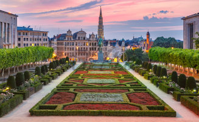
Brussels, Belgium
The capital of Belgium and the EU, famous for its medieval town square, chocolate, and waffles.
Must-See Places:
- Grand Place
- Atomium
- Manneken Pis
Local Food:
- Belgian Waffles
- Moules-frites
- Chocolate
Souvenirs:
- Belgian Chocolate
- Lace Products
- Trappist Beer
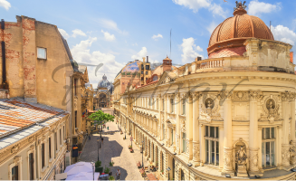
Bucharest, Romania
The "Paris of the East" with wide boulevards, impressive architecture, and vibrant nightlife.
Must-See Places:
- Palace of Parliament
- Village Museum
- Calea Victoriei
Local Food:
- Mici
- Sarmale
- Papanasi
Souvenirs:
- Romanian Wine
- Traditional Pottery
- Brânză de Burduf Cheese
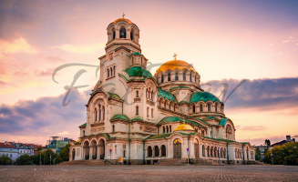
Sofia, Bulgaria
One of Europe's oldest cities with Roman ruins, beautiful churches, and nearby ski resorts.
Must-See Places:
- Alexander Nevsky Cathedral
- Boyana Church
- Vitosha Mountain
Local Food:
- Shopska Salad
- Kavarma
- Banitsa
Souvenirs:
- Rose Oil Products
- Rakia
- Traditional Crafts
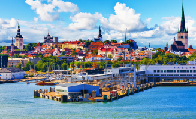
Tallinn, Estonia
A medieval gem with a beautifully preserved old town, Gothic architecture, and digital innovation.
Must-See Places:
- Old Town
- Toompea Castle
- St. Olaf's Church
Local Food:
- Black Bread
- Sült
- Kama Dessert
Souvenirs:
- Kumis (Fermented Milk Drink)
- Estonian Honey
- Handicrafts
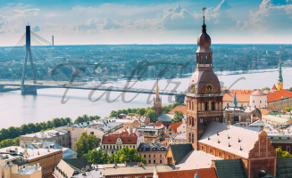
Riga, Latvia
The largest Baltic city with magnificent Art Nouveau architecture and a vibrant cultural scene.
Must-See Places:
- Old Town
- Art Nouveau District
- Central Market
Local Food:
- Grey Peas with Bacon
- Pyragi
- Riga Black Balsam
Souvenirs:
- Bernstein Products
- Riga Black Balsam
- Lace Products
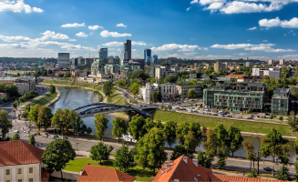
Vilnius, Lithuania
The charming capital with the largest medieval old town in the Baltics and baroque architecture.
Must-See Places:
- Old Town
- Gediminas Castle
- St. Anne's Church
Local Food:
- Cepelinai
- Šaltibarščiai
- Skilandis
Souvenirs:
- Ambražai Amber
- Lithuanian Honey
- Traditional Pottery
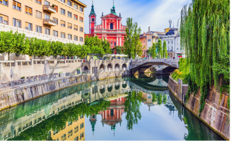
Ljubljana, Slovenia
A green capital with a charming old town, numerous bridges, and easy access to nature.
Must-See Places:
- Ljubljana Castle
- Predjama Castle
- Triple Bridge
Local Food:
- Štruklji
- Ajvar
- Potica
Souvenirs:
- Traditional Pottery
- Štruklji Maker
- Slovenian Wine
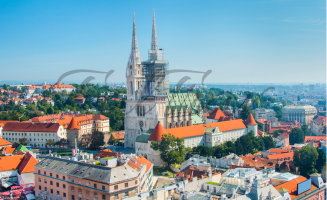
Zagreb, Croatia
The colorful capital with red-roofed houses, historic districts, and vibrant café culture.
Must-See Places:
- Upper Town
- Jelačić Square
- Mimara Museum
Local Food:
- Prosciutto
- Peka
- Štrudla
Souvenirs:
- Lika Cheese
- Rakija
- Croatian Handicrafts
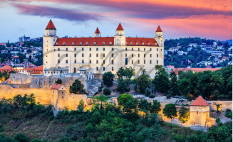
Bratislava, Slovakia
A compact capital with a hilltop castle and a relaxed atmosphere along the Danube River.
Must-See Places:
- Bratislava Castle
- Old Town
- Devín Castle
Local Food:
- Bryndzové halušky
- Segedín
- Trdelník
Souvenirs:
- Heritage Lace
- Slivovitz
- Traditional Pottery
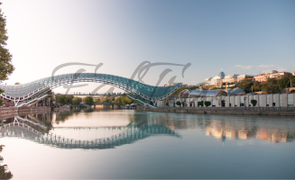
Tbilisi, Georgia
The vibrant capital where Europe meets Asia, with ancient churches, sulfur baths, and rich culture.
Must-See Places:
- Narikala Fortress
- Sameba Cathedral
- Sulfur Bath District
Local Food:
- Khachapuri
- Khinkali
- Churchkhela
Souvenirs:
- Georgian Wine
- Chacha
- Traditional Textiles
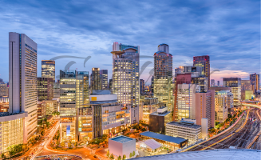
Osaka, Japan
The culinary capital of Japan, known for its modern architecture, vibrant food scene, and historic landmarks.
Must-See Places:
- Osaka Castle
- Dotonbori
- Universal Studios Japan
Local Food:
- Takoyaki
- Okonomiyaki
- Kushikatsu
Souvenirs:
- Kit Kats (Japan exclusive flavors)
- Osaka-themed Tenbin Maneki-neko
- Traditional Furoshiki
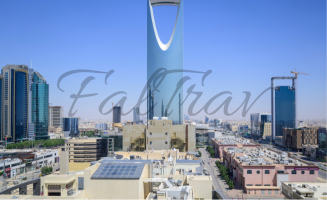
NEOM, Saudi Arabia
A futuristic cross-border city and tourist destination in the Tabuk Province of Saudi Arabia, part of Vision 2030.
Must-See Places:
- The Mirror Cliffs
- Sindalah Island
- The Line Concept
Local Food:
- Contemporary Saudi Cuisine
- International Fusion Dishes
- Traditional Kabsa
Souvenirs:
- NEOM Branded Items
- Modern Saudi Art Pieces
- Futuristic Design Objects
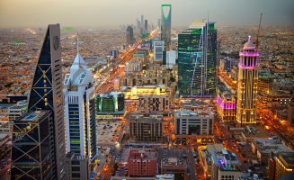
Riyadh, Saudi Arabia
The political and administrative center of Saudi Arabia, featuring modern skyscrapers, cultural sites, and traditional markets.
Must-See Places:
- Masmak Fortress
- Kingdom Centre
- National Museum of Saudi Arabia
Local Food:
- Kabsa
- Mandi
- Mattar Paneer
Souvenirs:
- Saudi Perfumes
- Arabic Coffee Sets
- Traditional Handicrafts
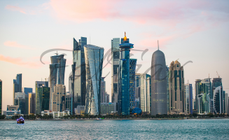
Doha, Qatar
The capital city of Qatar, known for its desert landscape, modern architecture, and world-class museums along the Persian Gulf.
Must-See Places:
- Museum of Islamic Art
- Souq Waqif
- The Pearl-Qatar
Local Food:
- Machboos
- Omadah
- Falafel
Souvenirs:
- Pearls and Jewelry
- Qatari Coffee Pots
- Traditional Thobes
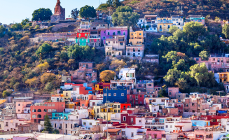
Mexico City, Mexico
The vast capital of Mexico, offering rich Aztec and Spanish colonial history, world-class museums, and vibrant neighborhoods.
Must-See Places:
- Chapultepec Castle
- Teotihuacan Pyramids
- Zócalo
Local Food:
- Tacos al Pastor
- Mole Poblano
- Churros
Souvenirs:
- Silver Jewelry
- Mezcal
- Colorful Serapes
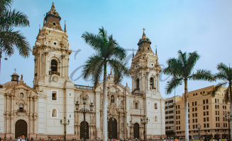
Lima, Peru
The coastal capital of Peru, blending colonial architecture with modern development and renowned for its exceptional cuisine.
Must-See Places:
- Historic Centre of Lima
- Miraflores District
- Larco Museum
Local Food:
- Ceviche
- Lomo Saltado
- Pisco Sour
Souvenirs:
- Alpaca Textiles
- Pisco
- Peruvian Cacao Products
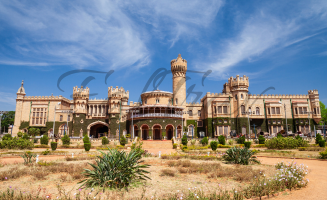
Bengaluru, India
The vibrant capital of Karnataka, known as India's Silicon Valley with a mix of technology, culture, and pleasant climate.
Must-See Places:
- Tipu Sultan's Palace
- Lalbagh Botanical Garden
- UB City
Local Food:
- Mysore Pak
- Bisi Bele Bath
- Filter Coffee
Souvenirs:
- Mysore Sandal Products
- Bangalore Blue Grapes Wine
- Traditional Silk Sarees